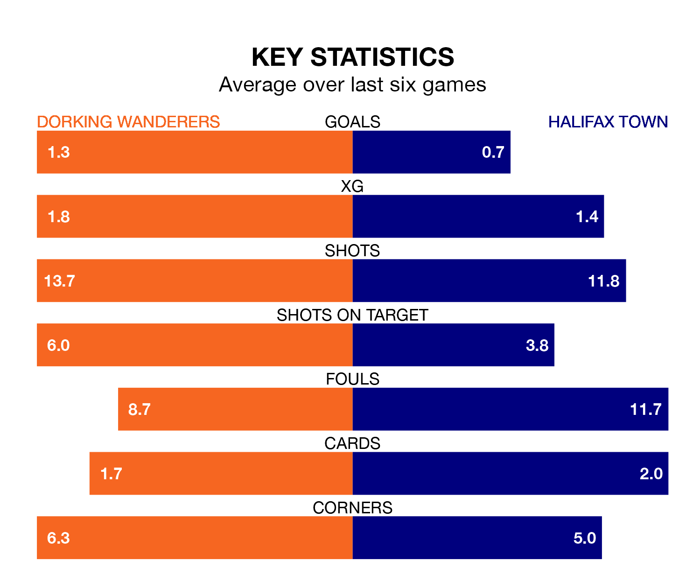

Halifax Town come to the Meadowbank Stadium to play Dorking Wanderers on Saturday in terrible form, having collected just two points from their last six games.
The visitors have drawn two and lost four of their last six fixtures, while Wanderers have three wins and three losses.
Dorking are 19th in the table after 30 games, of which they have won 10 and drawn four, earning 34 points.
Halifax are eight places ahead of Wanderers in 11th, with 10 wins and 11 draws putting them on 41 points.
In the last three years, Dorking and Halifax have played each other on three occasions. They won one each, and they drew once.
Their last meeting was on September 16, when Dorking won 1-0 away.
With 34 goals in 31 games so far this season, Town are scoring at below the league average rate with 1.1 goals per game. But they are conceding fewer than average too, letting in 36 goals at a rate of 1.2 per game.
The home side are also below average scorers, with 1.2 goals per game, compared to a league average of 1.5. They have conceded 1.7 goals per game.
Dorking's last match was on February 3, a 3-1 loss against Fylde, with Matt Briggs getting the goal for Wanderers.
Halifax lost 3-1 against Solihull Moors last time out, on Tuesday, with Luke John Summerfield on the scoresheet.
Updated: 11:18 (UTC), 08/02/24